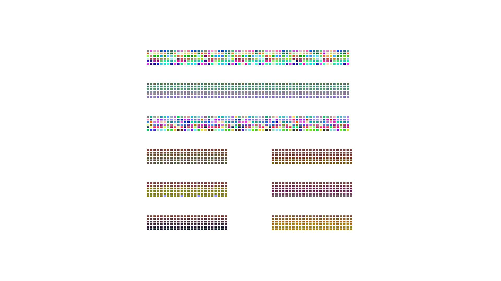

2022-x-13
En la década de 1950 John Cage escribió una serie de piezas musicales aleatorias usando los 64 hexagramas del I Ching. Los hexagramas pueden ser construidos de distintas maneras. Cage lanzó 6 veces 3 monedas para construir cada hexagrama. Cada hexagrama definía algún parámetro de la pieza (cantidad de voces, altura, valor de duración, etc). La computadora simula las tiradas y dibuja un hexagrama.


Son 64
Como los hexagramas son grupos de 6 líneas, que pueden estar cortadas o no, existen 64 diferentes. Cuando le pido a la computadora que dibuje 64 al azar no encuentra todos. Cage usaba tablas de 64 celdas para vincular cada hexagrama con una decisión.